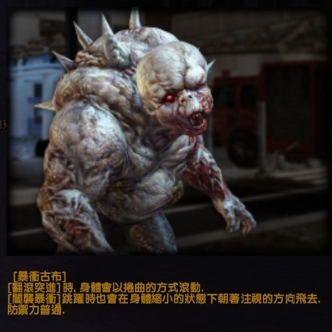
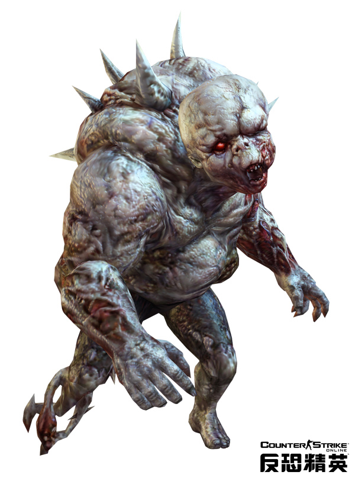
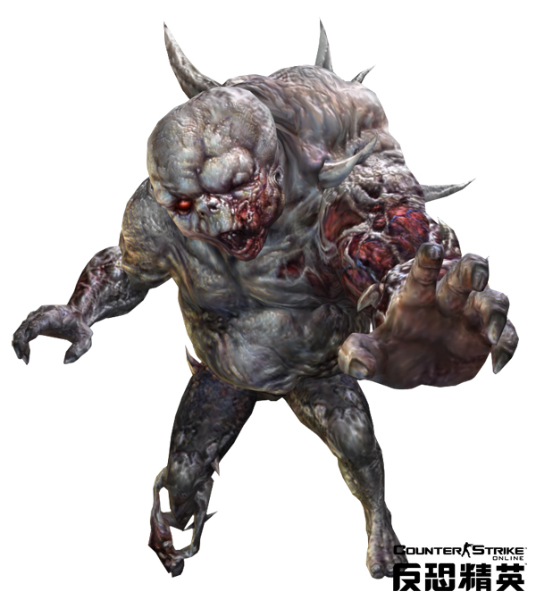
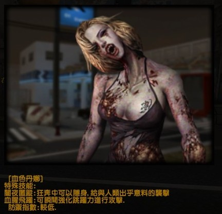
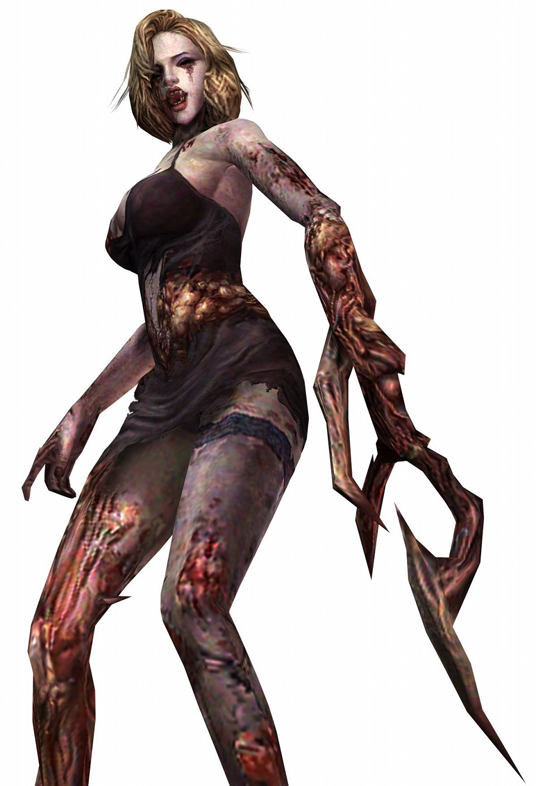
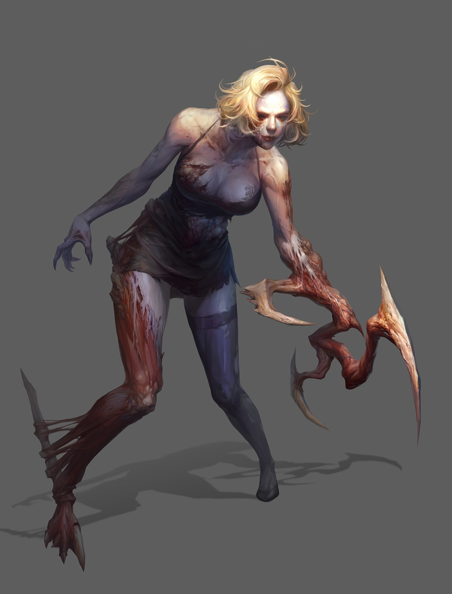
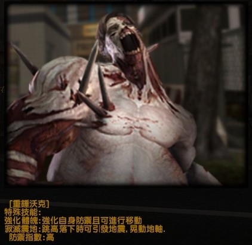
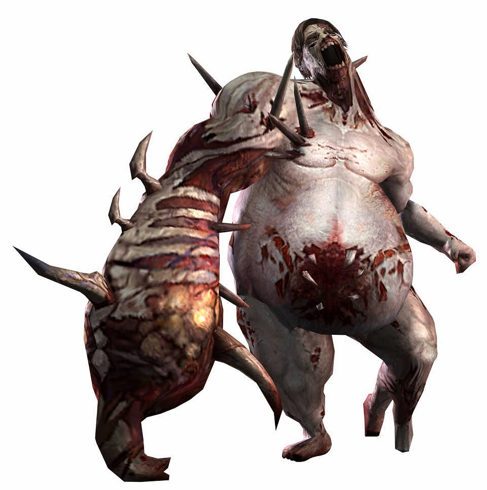
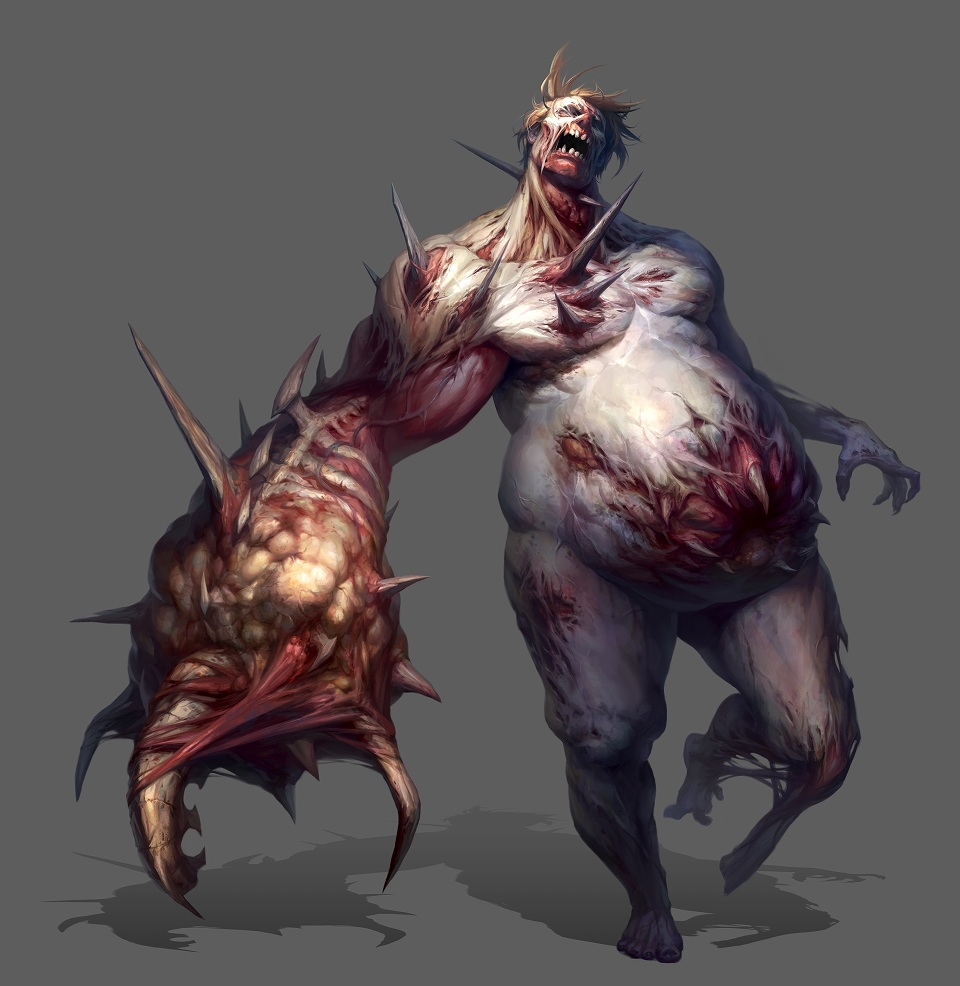

喪屍介紹
首頁
TOP
暴衝古布
身形嬌小能在狹窄的空間中發揮突襲必殺技的特化殭屍。防禦力和移動速度雖然看似不強，但只要一發動翻滾突進時，就可將身形縮小，並可運用滾動方式來變換位置，在高度較低的地形時即可快速地移動；倘若發動特殊能力後，身體即開始捲曲滾動並縮小朝目標飛去。



血色丹娜
瞬間跳躍可說是非常強大的技能，一但使用，能跳躍到極遠的距離，是一項恐怖的技能。奔跑時會慢慢隱形，速度提高，防禦下降。隱形狀態是完全隱形，不過會在地上露出影子，這點要注意。



重錘沃克
血量和皮厚程度是殭屍中最高，而且奔跑時速度下降但防禦提升，抗擊退性高。絕招分別是體力強化和人工大地震，震地技能能夠使人類飛起來。



加入戰鬥